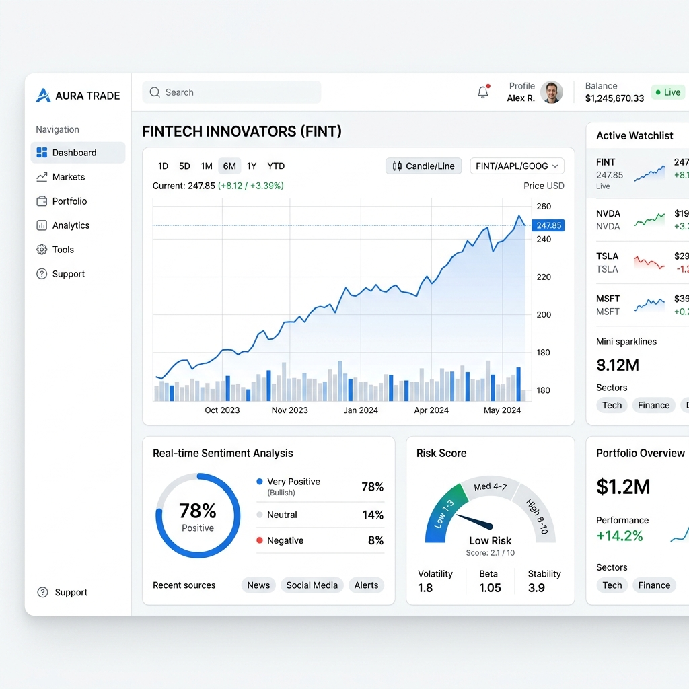

Trade Smarter with AI-Powered Market Intelligence
Understand market movements, summarize financial news, analyze sentiment, and assess risk—all in one intelligent platform.

Too Much Market Information. Not Enough Clarity.
Information Overload
Drowning in 24/7 financial media streams and thousands of open tabs.
Market Noise
Dissecting objective institutional telemetry from volatile retail social media speculation.
Emotional Decisions
Suffering losses from panic trades driven by sudden, unexplained asset swings.
Poor Risk Management
Deploying capital allocations without identifying hidden risk correlations.
Meet TradePilot AI
Search Asset
Look up any crypto asset or equity ticker symbol.
AI Analysis
System parses macro channels, textual summaries, and risk indexes.
Actionable Insights
Consume clear summaries and volatility vectors before committing capital.
Unrivaled Market Intelligence
AI Market Explainer
Explains why underlying assets move in clear prose.
AI News Summarizer
Converts massive regulatory filings into key summary metrics.
Sentiment Analysis
Maps the structural flow of bullish and bearish indicator arrays.
Risk Analysis Engine
Outputs exact risk parameters and maximum expected drawdown metrics.
Smart Watchlist
Continuously matches baseline trend movements for tracked preferences.
Intelligence Dashboard
Unifies real-time market data indexes inside an elegant central command hub.
Deep Product Showcase
The Competitive Edge
Traditional Research
- Fragmented websites
- Hours of intensive research
- Over-complicated technical indexes
- Emotion-driven reactive execution
TradePilot AI
- Single centralized terminal
- Real-time contextual summaries
- Simplified objective prose
- Risk-aware proactive decisions
How TradePilot Analyzes The Market
Data Ingestion
Aggregating millions of SEC filings, news articles, and price streams instantly.
Natural Language Processing
Extracting sentiment and intent from unstructured financial narratives.
Risk Calculation
Correlating macro events with asset volatility to build a risk matrix.
Objective Delivery
Presenting clean, bias-free insights directly to your dashboard.
Accelerate Your Trade Decisions
- Save Time
- Better Decisions
- Understand Risk
- Reduce Overload
Frequently Asked Questions
No. TradePilot AI is an educational technology utility providing objective decision support data. We do not issue formal investment allocation instructions.
Our core indexing pipelines map raw data layers continuously, checking public data against fixed historical facts for highly accurate summarization.
All primary global equity listings and major indices.
Yes, we monitor high-market-cap digital assets and stablecoin metrics.
Yes, the entire platform is native responsive and accessible via web wrappers across smartphone form factors.